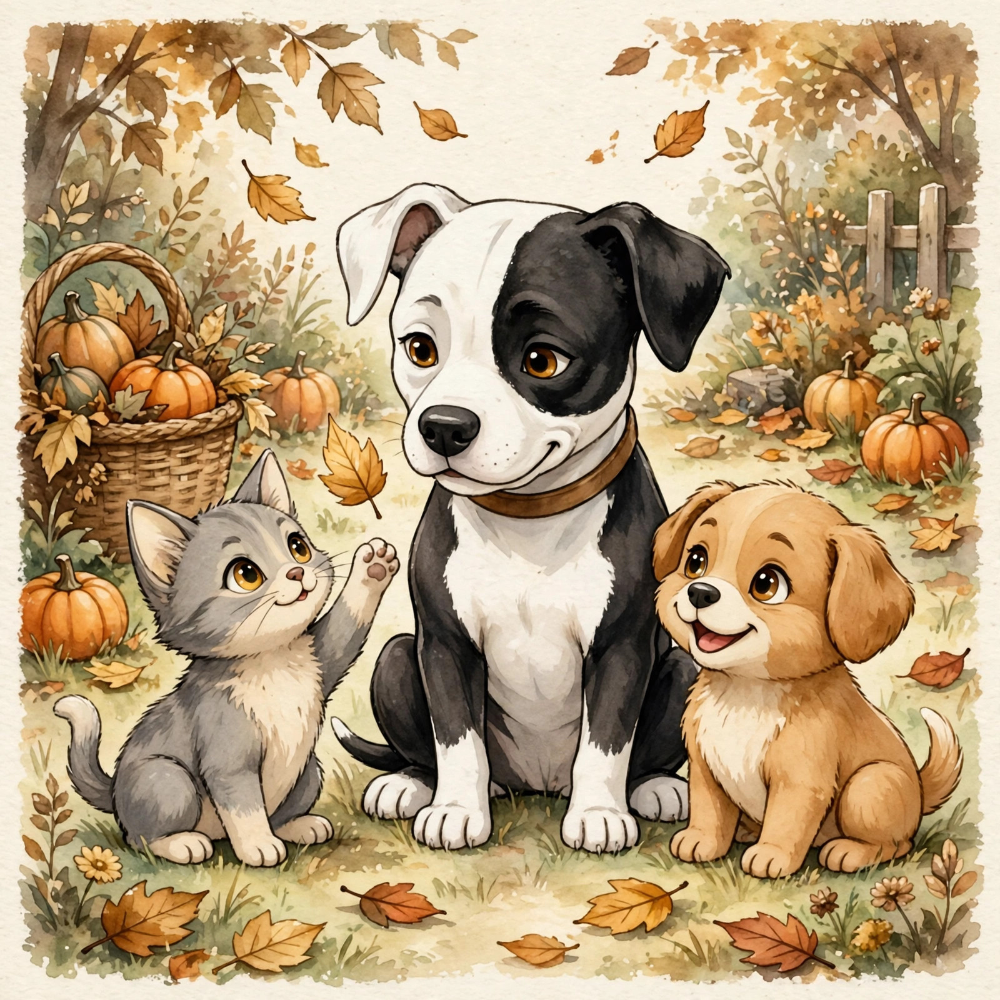
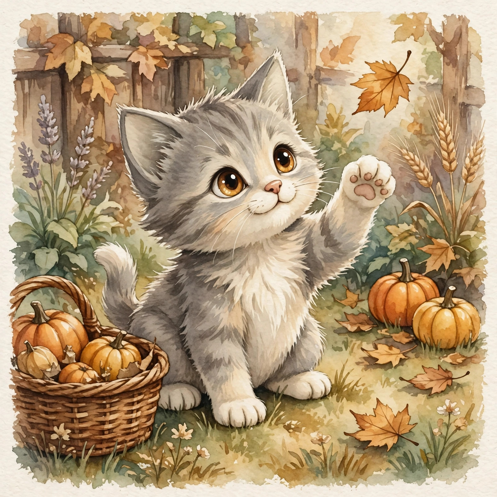
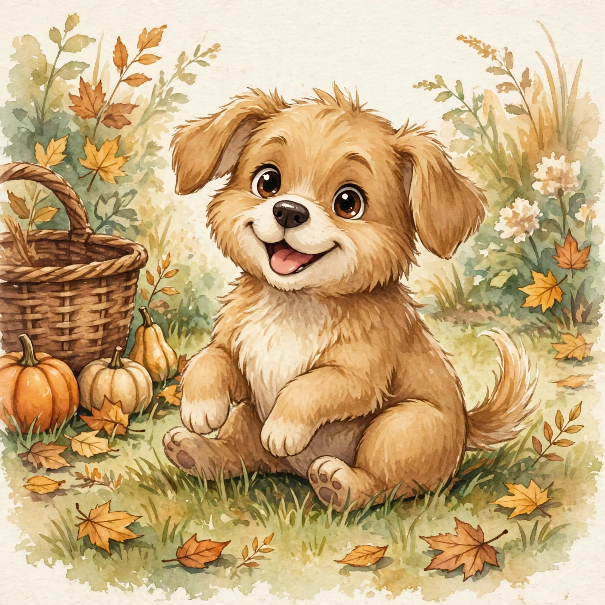

Muffin and Friends
Muffin has two new friends, and she would love for you to meet them.


Pip
A friend for Leiann
This is Pip. Pip is small, and Pip is brave.
When a leaf falls, Pip does not run. Pip reaches up one paw and says hello.
Pip loves baskets, sunny spots, and finding out what is around the corner.

Biscuit
A friend for Einar
This is Biscuit. Biscuit is round, and Biscuit is happy.
Sometimes Biscuit falls over his own feet. Plop!
Then Biscuit laughs, and his tail wags, and he tries again.
Love, Jackie